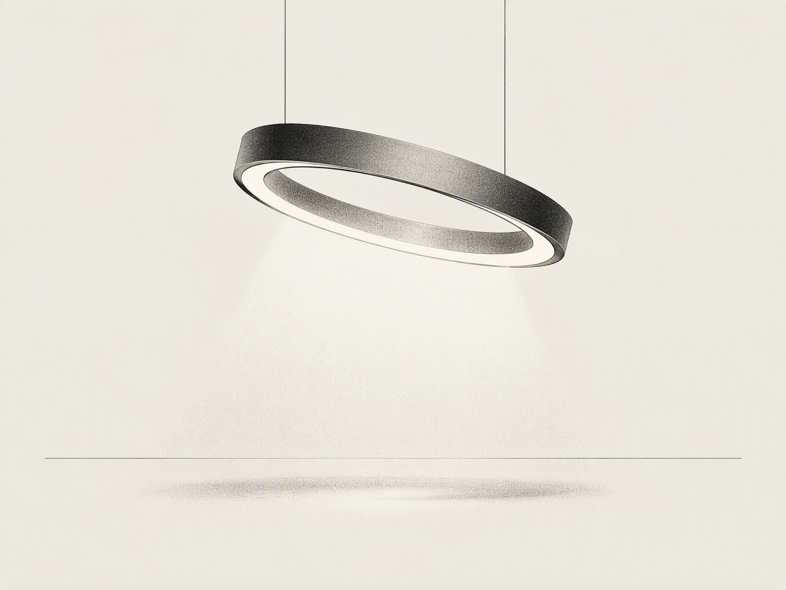

LUMEN KEYNOTE · 2026
Lumen 2.0
让光重新学会克制
新一代环境光引擎发布会：关于亮度、色温，以及光与人的边界。
2026 年 9 月 16 日 · 线上直播
今晚 24:00 开启预售
01 · 问题 PROBLEM
LUMEN KEYNOTE 2026
屏幕越来越亮，眼睛越来越累
亮度竞赛走了十年，参数表年年刷新，用户的眼睛却没有得到任何照顾。三个数字说明问题已经积了多深。
78%
夜间用眼不适
的用户承认，夜间使用手机后感到明显的眼部干涩与疲劳
2.4×
夜间屏幕时长
过去五年，人均夜间屏幕时长增长了两倍有余
0
无级调光设备
主流设备中，真正做到随环境无级调光的数量
示例数据 · 数字口径沿用 Lumen 1.0 发布材料的演示口径。
02 · 数据 DATA
LUMEN KEYNOTE 2026
五年，夜间屏幕时长翻倍有余
人均每日夜间屏幕使用时长指数（2021 = 100），全部增量来自 21 点之后。
240
180
120
60
0
2.4×
2021
2022
2023
2024
2025
2026E
增长全部发生在夜里
日间使用基本持平，21 点后的时段贡献了五年间几乎全部增量。
亮度增长快过眼睛适应
屏幕峰值亮度同期提升约三倍，人眼的调节机制没有任何升级。
终点不必是 4.8×
如果设备学会照顾人，曲线继续上扬也不必然意味着伤害加深。
示例数据 · 指数以 2021 年为基期 100，终值锚定原发布口径"五年增长 2.4 倍"；中间年份为演示插值。
03 · 洞察 INSIGHT
LUMEN KEYNOTE 2026
光不该争夺注意力，
它应该照顾人。
这是 Lumen 2.0 全部的设计原点——从"更亮"，转向"更懂你"。
亮度服从环境
不再是固定的档位表，而是对房间的实时回应。
色温服从时间
随日落偏移，像房间里多了一扇看不见的窗。
存在服从人
最好的光，是你察觉不到它存在的那种。
04 · 原理 ENGINE
LUMEN KEYNOTE 2026
四轮循环，让光自己学会判断
Lumen 2.0 的环境光引擎不是一条规则，而是一个持续运转的闭环：感知房间、做出判断、完成调节，再把你的反馈学进去。
循环每分每秒都在发生，却从不需要你插手——这正是"克制"的工程含义。
感知
双光谱传感器持续采样环境光
决策
引擎计算目标亮度与色温
执行
4096 级无级调节，0.3ms 完成
学习
记忆作息与偏好，越用越懂你
环境光引擎
感知 · 决策 · 执行 · 学习
05 · 性能 PERFORMANCE
LUMEN KEYNOTE 2026
三个数字，看懂 Lumen 2.0
0.3ms
光线响应延迟
环境变化到亮度调整完成，快过一次眨眼
4096
级亮度调节
无级过渡，眼睛永远察觉不到跳变
-62%
夜间蓝光输出
日落后自动切换暖光谱，不打扰褪黑素分泌
示例数据 · 实验室口径：响应延迟为 25℃ 环境下的典型值；蓝光对比对象为同尺寸普通 LED 屏幕。
我们不制造更亮的屏幕，
我们制造更舒服的夜晚。
LUMEN DESIGN MANIFESTO · NO.07
06 · 对比 BEFORE / AFTER
LUMEN KEYNOTE 2026
同一个夜晚，两种体验
BEFORE · LUMEN 1.0
手动调节，亮度永远慢半拍
深夜解锁瞬间，冷白光直射双眼
色温固定，与房间灯光格格不入
档位粗糙，每一次跳变都察觉得到
AFTER · LUMEN 2.0
环境光引擎全自动，0.3ms 跟随变化
夜间模式渐入渐出，亮度从 1nit 起步
色温随日落同步偏移，像房间里的一扇窗
4096 级无级过渡，调节本身隐形
07 · 设计 DESIGN
LUMEN KEYNOTE 2026
一盏灯的几何学
15° 倾角投射
光线先碰到桌面，再温柔地漫回视野——没有任何角度直视灯珠。
一体成型
整灯无螺丝、无接缝，环形铝材一次弯成。
隐藏式传感
双光谱传感器藏在环体内壁，不开孔、不突兀。
静物气质
不发光的时候，摆在哪里都像一件静物。

08 · 界面 INTERFACE
LUMEN KEYNOTE 2026

界面即环境
一个圆环
打开 App 看到的不是按钮，而是此刻房间里的光。
一次拖动
亮度与色温在同一个手势里完成，所见即所得。
零打扰自动化
所有调节在后台安静运行，不推送、不打扰。
09 · 体验 EXPERIENCE
LUMEN KEYNOTE 2026
四项指标，各自的相对水位
把四个关键指标放到各自的参照系里看——条形越长，代表领先参照档位越多。
光线响应延迟
0.3ms
领先 99% · 参照：人眼可感知阈值 100ms
亮度调节级数
4096 级
细腻度 +94% · 参照：主流 256 级档位
夜间蓝光输出
-62%
降低 62% · 参照：同尺寸普通 LED 屏幕
最低亮度
1nit
下探 90% · 参照：常见 10nit 最低档
示例数据 · 蓝光 −62% 与 4096 级为产品口径；"99% / 94% / 90%"按页内注明参照档位的演示换算，条宽按数值与 100 的比例计算。改数值请走批注流程，图形不随文字就地更新。
10 · 展望 ROADMAP
LUMEN KEYNOTE 2026
接下来的十八个月
2026 Q4
Lumen 2.0 发售
桌面版首发，覆盖三大平台；今晚 24:00 开启预售。
2027 Q2
Lumen Home
从一张书桌，扩展到整个房间的光环境。
2028 Q1
开放光谱协议
让每一盏灯都学会克制，与生态伙伴共享调光能力。
时间节点为产品规划口径，可能随研发进度调整。
LUMEN KEYNOTE · END
Lumen 2.0
今晚 24:00 开启预售 · 让光重新学会克制
发布会全程回放将于直播结束后上线
2026.09.16 · LUMEN.CO